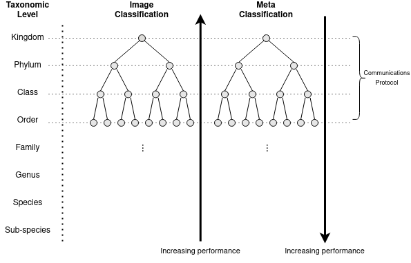

Cascading Ensemble Classifier
Introduction
The cascading ensemble classifier capitalizes upon the determined trends within image and metadata classification within wildlife's taxonomic structure.
Specifically:
-
Metadata classification performance increases with decreasing taxonomic level.
-
Image classification performance decreases with decreasing taxonomic level.
The below diagram visualizes the high level concept. The concept makes use of a cascading selective classifier (classifier per parent node) for both the image and metadata classification components, resulting in dual, symmetrical cascading classification trees. At each level of the cascade (parent node) the trees communicate, to make a joint decision leveraging or mitigating their strengths or weaknesses to form a robust decision.

Models
The models specified below are used at each parent node within the cascading classification. Each model is trained on data limited to its taxonomic child nodes.
Image Classification
The image classifier used is the EfficientNet-B6 Convolutional Neural Network (CNN). This CNN was selected due to its comparatively smaller size due to the efficient nature of its training and structure, this is essential due to the quantity of models required to be trained within the cascading ensemble classifier. It is acknowledged that potentially improved results could be generated from using state of the art image classifiers in the form of image transformers such as Vit-G/14
The model uses transfer learning in the form of model weights pre-trained on the ImageNet dataset. The model's output is augmented to adapt to the dataset. The softmax output layer is replaced by a two-dimensional average global pooling layer to flatten and average the output from the prior convolutional layer, followed by a softmax layer specified by the number of child nodes.
Image Classifier Specifications
-
Batch size: \([4-32]\) due to variable training sizes
-
Input size: \((528, 528, 3)\) with pixel values in range \([0, 255]\)
-
Drop connect rate of \(0.2\)
-
Learning rate of \(0.001\) with Adam optimizer
-
Loss function: categorical cross-entropy
Metadata Classification
The metadata classifier used is XGBoost. The study's experiments determined this is the optimal metadata classifier at all taxonomic levels. XGBoost is an optimized ensemble gradient descent algorithm that has shown scalable success over a diverse range of datasets and challenges.
The model is hyper-parameter tuned using the maximum tree depth hyper-parameter within 5-fold cross-validation. The set of maximum tree depths is within the range of \(1\) to the number of input features, with a best model save policy.
XGBoost Specifications
-
Minimums sample split: 2
-
Split evaluation metric: Gini
-
Booster: gbtree
Joint Decision
The joint decision, capitalizes upon the respective classifier taxonomic performance trends determined in the experiments, in order to capitalize upon the strengths and mitigate the weaknesses of the two classifiers. The joint decision achieves this through weighting. At each taxonomic parent node within the symmetrical trees, the individual metadata and image classifiers generate a softmax output. The output of each is weighted according to the table below. The table is constructed based on experimental results and the perceived strengths and weaknesses of each classifier based on their taxonomic performance trend.
| Taxonomic Level | Meta Weight | Image Weight |
|---|---|---|
| Family | 0.1 | 0.9 |
| Genus | 0.2 | 0.8 |
| Species | 0.5 | 0.5 |
| Subspecies | 0.9 | 0.1 |
The weighted softmax output of each classifier output share identical dimensions, and are added together. The summed output must be restricted to a normal distribution to remain a softmax output. The resulting weighted output capitalizes upon the strengths of each classifier, and mitigates the potential weaknesses.
Limitations
The study used a total of near 60 image, metadata, and supporting models to generate the functional cascading ensemble classifier for this dataset. Due to the cascading nature of the classifier, batch classifications are not a possibility. Each model is required to be loaded in succession based on the output of the previous model. The resulting classifier is not feasible as a real-time classifier due to its very poor time complexity. Additionally, the memory complexity of loading large image classification models requires that each model must be removed from memory once it has been used, to free space for the sequential classifier. In short, significant improvements to the space and time complexity is still required to realize the full potential of the cascading ensemble classifier.